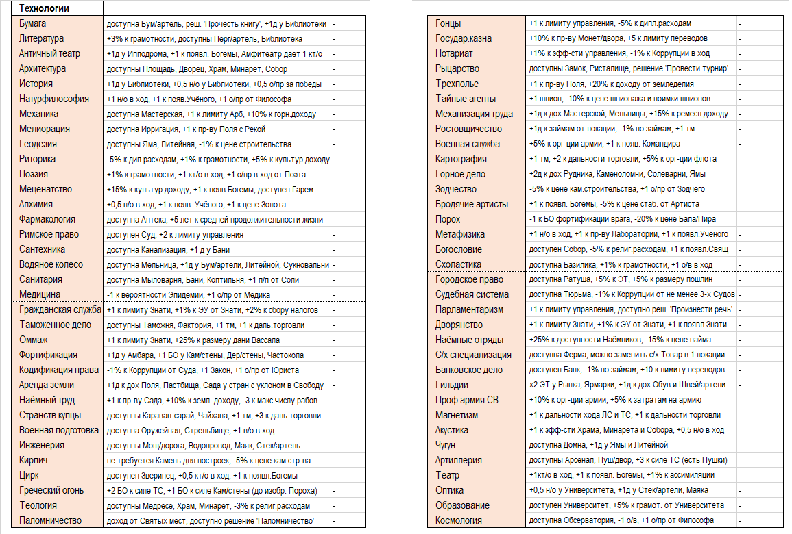

Для развития науки и изучения выбранных технологий необходимо накопление научных очков. Игрок указывает в заявке на ход ту технологию, в изучение которой он направляет имеющиеся у него научные очки. Очки можно накапливать, не тратя в текущий ход.
Эффекты от изучения тех или иных технологий становятся доступными уже в ход их изучения.
Доступные для изучения технологии отражены в балансе игрока. Если технология изучена страной, то это отражено на технологическом древе. Пока не будут изучены технологии, являющие отправными условиями изучения новых технологий, информация о них не появится в балансе.
Также в балансе указана стоимость каждой научного знания, доступного игроку, а также годы возможного изучения неизвестных технологий. Изучение технологии ранее установленного года их изучения не возможно. Постепенно, по мере изучения технологий другими странами, стоимость технологий уменьшается.
Допускается изучение не более 1 технологии в ход!
Страны «вырабатывают» каждый ход различное кол-во н/о.
На научный потенциал страны оказывает влияние:
• заложенный линейный прогресс (включая эффекты от ранее изученных технологий)
• наличие специальных строений
• наличие советника-Учёного
• особенности религий, ФП и этнические особенности
• некоторые инновации
• входящий торговый марштур дает 0,5, эффект не складывается
На «выработку» кт/о влияет:
• наличие специальных строений
• наличие советников из области Богемы
• изучаемые страной технологии
• особенности религий, ФП и этнические особенности
• некоторые инновации
Культурные очки (кт/о) необходимы для того, чтобы:
1) Проводить ассимиляцию населения
2) Основывать новые города
3) Вводить культурные традиции
4) Принимать социально-политические инновации
Также кт/о можно тратить на обучение персонажей — увеличение их скилла. Действие возможно, если оно отражено в балансе.
Обучение возможно только в отношении детей Правителя (до 20 лет).
Инновации – дополнительные возможности для развития стран, которые игроки могут выполнять за в/о (военные инновации), н/о (экономические инновации) или кт/о (социально-политические инновации).
В балансах указаны возможные для внедрения странами инновации, а также стоимость их внедрения.
Если страна не удовлетворяет требованиям для появления инновации – в балансе будет пустое место. Инновации различаются в зависимости от культурной группы страны. Также возможны отдельные инновации, которые доступны строго определенной стране.
Допускается внедрение не более 1 инновации в ход!